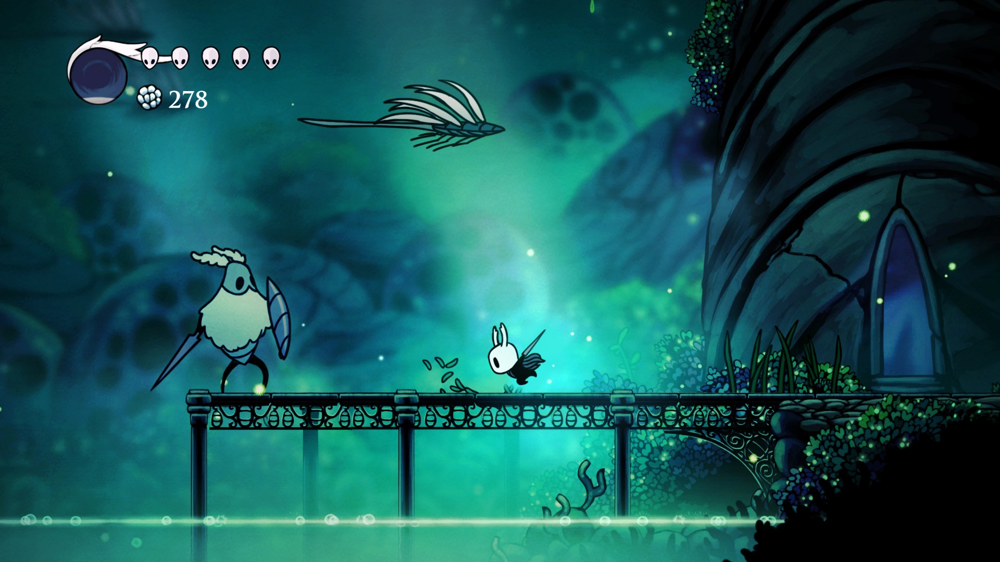
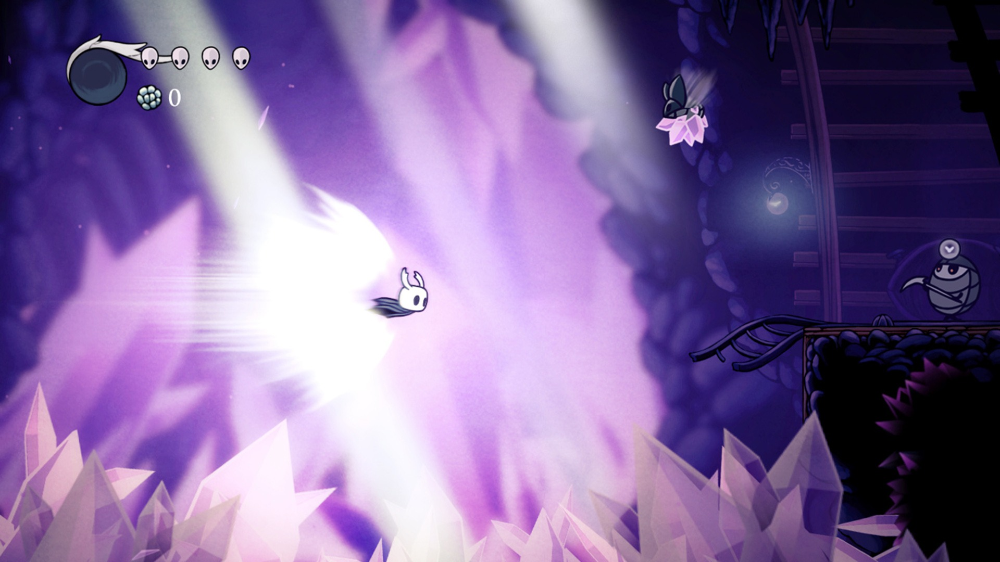

Imagine um reino escondido nas profundezas da terra, um lugar onde a luz mal toca e o silêncio é quebrado apenas pelo eco de passos solitários. Este é Hallownest, um império de insetos que já brilhou como uma joia subterrânea, mas agora jaz em ruínas, envolto em mistério e melancolia. Assolado por uma misteriosa praga que transformou seus habitantes, o lugar guarda segredos de um passado grandioso e de sua queda.
Enfrente as profundezas de um reino esquecido Abaixo da cidade moribunda de Dirtmouth jaz um reino antigo e arruinado. Muitos são atraídos para o subterrâneo em busca de riquezas, glórias ou respostas para antigos segredos.
Sobreviva usando seus reflexos e habilidades Explore cavernas serpenteantes, cidades antigas e ermos mortais. lute contra criaturas malignas e alie-se a insetos bizarros num estilo clássico 2D desenhado à mão.
 Um mundo evocativo feito à mão O mundo de Hollow Knight ganha vida em detalhes significativos, suas cavernas ficam cheia de vida com criaturas bizarras e terríveis, todas animadas manualmente em estilo 2D tradicional. Cada nova área que você descobrir é lindamente exclusiva e peculiar, cheia de novos personagens e criaturas. Explore e descubra os segredos ocultos do caminho em ruínas. Se você gosta de jogos clássicos, personagens fofos mas assustadores, aventuras épicas e mundos lindos e góticos, Hollow Knight estará à sua espera!